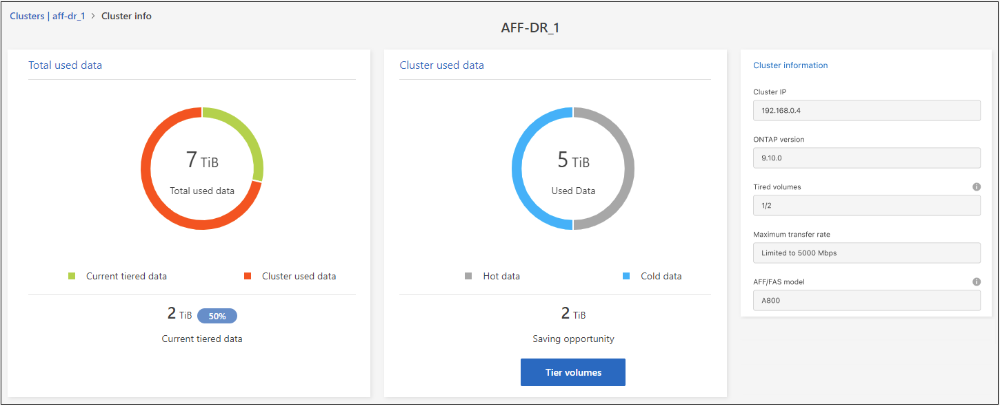
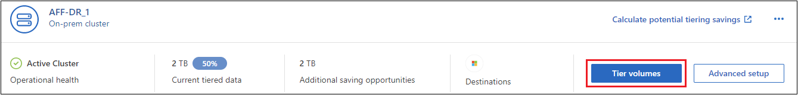
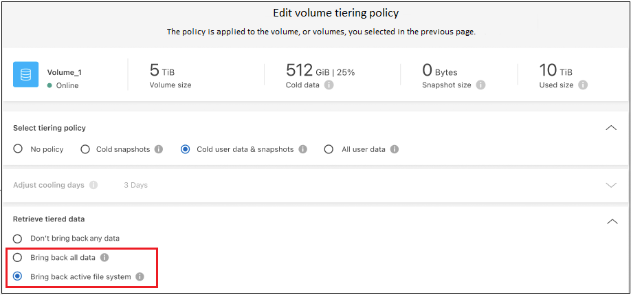
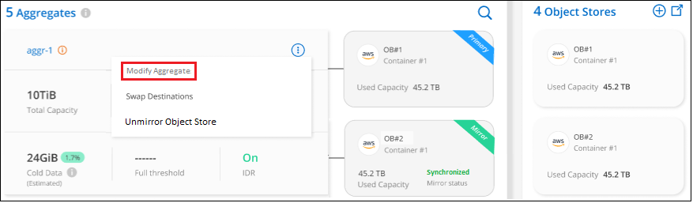
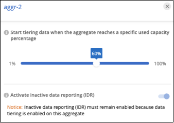

Get started
Get started
Managing data tiering for your clusters
 Suggest changes
Suggest changes
Now that you've set up data tiering from your on-prem ONTAP clusters, you can tier data from additional volumes, change a volume's tiering policy, discover additional clusters, and more.
Reviewing tiering info for a cluster
You might want to see how much data is in the cloud tier and how much data is on disks. Or, you might want to see the amount of hot and cold data on the cluster's disks. BlueXP tiering provides this information for each cluster.
-
From the left navigation menu, select Mobility > Tiering.
-
From the Clusters page, click the menu icon
 for a cluster and select Cluster info.
for a cluster and select Cluster info.
-
Review details about the cluster.
Here's an example:

Note that the display is different for Cloud Volumes ONTAP systems. While Cloud Volumes ONTAP volumes can have data tiered to the cloud, they do not use the BlueXP tiering service. Learn how to tier inactive data from Cloud Volumes ONTAP systems to low-cost object storage.
You can also view tiering information for a cluster from Digital Advisor if you're familiar with this NetApp product. Just select Cloud Recommendations from the left navigation pane.

Tiering data from additional volumes
Set up data tiering for additional volumes at any time—for example, after creating a new volume.

|
You don't need to configure the object storage because it was already configured when you initially set up tiering for the cluster. ONTAP will tier inactive data from any additional volumes to the same object store. |
-
From the left navigation menu, select Mobility > Tiering.
-
From the Clusters page, click Tier volumes for the cluster.

-
On the Tier Volumes page, select the volumes that you want to configure tiering for and launch the Tiering Policy page:
-
To select all volumes, check the box in the title row (
 ) and click Configure volumes.
) and click Configure volumes. -
To select multiple volumes, check the box for each volume (
 ) and click Configure volumes.
) and click Configure volumes. -
To select a single volume, click the row (or
 icon) for the volume.
icon) for the volume.
-
-
In the Tiering Policy dialog, select a tiering policy, optionally adjust the cooling days for the selected volumes, and click Apply.

The selected volumes start to have their data tiered to the cloud.
Changing a volume's tiering policy
Changing the tiering policy for a volume changes how ONTAP tiers cold data to object storage. The change starts from the moment that you change the policy. It changes only the subsequent tiering behavior for the volume—it does not retroactively move data to the cloud tier.
-
From the left navigation menu, select Mobility > Tiering.
-
From the Clusters page, click Tier volumes for the cluster.
-
Click the row for a volume, select a tiering policy, optionally adjust the cooling days, and click Apply.
Note: If you see options to "Retrieve Tiered Data", see Migrating data from the cloud tier back to the performance tier for details.
The tiering policy is changed and data begins to be tiered based on the new policy.
Changing the network bandwidth available to upload inactive data to object storage
When you activate BlueXP tiering for a cluster, by default, ONTAP can use an unlimited amount of bandwidth to transfer the inactive data from volumes in the working environment to object storage. If you notice that tiering traffic is affecting normal user workloads, you can throttle the amount of network bandwidth that is used during the transfer. You can choose a value between 1 and 10,000 Mbps as the maximum transfer rate.
-
From the left navigation menu, select Mobility > Tiering.
-
From the Clusters page, click the menu icon
for a cluster and select Maximum transfer rate.
-
In the Maximum transfer rate page, select the Limited radio button and enter the maximum bandwidth that can be used, or select Unlimited to indicate that there is no limit. Then click Apply.

This setting does not affect the bandwidth allocated to any other clusters that are tiering data.
Download a tiering report for your volumes
You can download a report of the Tier Volumes page so you can review the tiering status of all the volumes on the clusters you are managing. Just click the  button. BlueXP tiering generates a .CSV file that you can review and send to other groups as needed. The .CSV file includes up to 10,000 rows of data.
button. BlueXP tiering generates a .CSV file that you can review and send to other groups as needed. The .CSV file includes up to 10,000 rows of data.

Migrating data from the cloud tier back to the performance tier
Tiered data that is accessed from the cloud may be "re-heated" and moved back to the performance tier. However, if you want to proactively promote data to the performance tier from the cloud tier, you can do this in the Tiering Policy dialog. This capability is available when using ONTAP 9.8 and greater.
You might do this if you want to stop using tiering on a volume, or if you decide to keep all user data on the performance tier, but keep Snapshot copies on the cloud tier.
There are two options:
| Option | Description | Affect on Tiering Policy |
|---|---|---|
Bring back all data |
Retrieves all volume data and Snapshot copies tiered in the cloud and promotes them to the performance tier. |
Tiering policy is changed to "No policy". |
Bring back active file system |
Retrieves only active file system data tiered in the cloud and promotes it to the performance tier (Snapshot copies remain in the cloud). |
Tiering policy is changed to "Cold snapshots". |

|
You may be charged by your cloud provider based on that amount of data transferred off the cloud. |
Make sure you have enough space in the performance tier for all the data that is being moved back from the cloud.
-
From the left navigation menu, select Mobility > Tiering.
-
From the Clusters page, click Tier volumes for the cluster.
-
Click the
icon for the volume, choose the retrieval option you want to use, and click Apply.
The tiering policy is changed and the tiered data starts to be migrated back to the performance tier. Depending on the amount of data in the cloud, the transfer process could take some time.
Managing tiering settings on aggregates
Each aggregate in your on-prem ONTAP systems has two settings that you can adjust: the tiering fullness threshold and whether inactive data reporting is enabled.
- Tiering fullness threshold
-
Setting the threshold to a lower number reduces the amount of data required to be stored on the performance tier before tiering takes place. This might be useful for large aggregates that contain little active data.
Setting the threshold to a higher number increases the amount of data required to be stored on the performance tier before tiering takes place. This might be useful for solutions designed to tier only when aggregates are near maximum capacity.
- Inactive data reporting
-
Inactive data reporting (IDR) uses a 31-day cooling period to determine which data is considered inactive. The amount of cold data that is tiered is dependent on the tiering policies set on volumes. This amount might be different than the amount of cold data detected by IDR using a 31-day cooling period.
It's best to keep IDR enabled because it helps to identify your inactive data and savings opportunities. IDR must remain enabled if data tiering was enabled on an aggregate.
-
From the Clusters page, click Advanced setup for the selected cluster.

-
From the Advanced Setup page, click the menu icon for the aggregate and select Modify Aggregate.

-
In the dialog that is displayed, modify the fullness threshold and choose whether to enable or disable inactive data reporting.

-
Click Apply.
Fixing operational health
Failures can happen. When they do, BlueXP tiering displays a "Failed" operational health status on the Cluster Dashboard. The health reflects the status of the ONTAP system and BlueXP.
-
Identify any clusters that have an operational health of "Failed."
-
Hover over the informational "i" icon see the failure reason.
-
Correct the issue:
-
Verify that the ONTAP cluster is operational and that it has an inbound and outbound connection to your object storage provider.
-
Verify that BlueXP has outbound connections to the BlueXP tiering service, to the object store, and to the ONTAP clusters that it discovers.
-
Discovering additional clusters from BlueXP tiering
You can add your undiscovered on-prem ONTAP clusters to BlueXP from the Tiering Cluster page so that you can enable tiering for the cluster.
Note that buttons also appear on the Tiering On-Prem dashboard page for you to discover additional clusters.
-
From BlueXP tiering, click the Clusters tab.
-
To see any undiscovered clusters, click Show undiscovered clusters.

If your NSS credentials are saved in BlueXP, the clusters in your account are displayed in the list.
If your NSS credentials are not saved in BlueXP, you are first prompted to add your credentials before you can see the undiscovered clusters.

-
Click Discover Cluster for the cluster that you want to manage through BlueXP and implement data tiering.
-
In the Cluster Details page, enter the password for the admin user account and click Discover.
Note that the cluster management IP address is populated based on information from your NSS account.
-
In the Details & Credentials page the cluster name is added as the Working Environment Name, so just click Go.
BlueXP discovers the cluster and adds it to a working environment in the Canvas using the cluster name as the working environment name.
You can enable the Tiering service or other services for this cluster in the right panel.
Search for a cluster across all BlueXP Connectors
If you are using multiple Connectors to manage all the storage in your environment, some clusters on which you want to implement tiering may be in another Connector. If you are not sure which Connector is managing a certain cluster, you can search across all Connectors using BlueXP tiering.
-
In the BlueXP tiering menu bar, click the action menu and select Search for cluster in all Connectors.

-
In the displayed Search dialog, enter the name of the cluster and click Search.
BlueXP tiering displays the name of the Connector if it is able to find the cluster.
-
Switch to the Connector and configure tiering for the cluster.